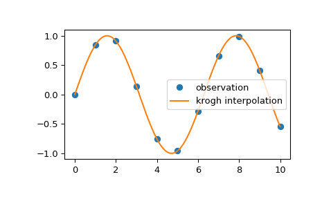

scipy.interpolate.krogh_interpolate¶
-
scipy.interpolate.krogh_interpolate(xi, yi, x, der=0, axis=0)[source]¶ Convenience function for polynomial interpolation.
See
KroghInterpolatorfor more details.- Parameters
- xiarray_like
Known x-coordinates.
- yiarray_like
Known y-coordinates, of shape
(xi.size, R). Interpreted as vectors of length R, or scalars if R=1.- xarray_like
Point or points at which to evaluate the derivatives.
- derint or list, optional
How many derivatives to extract; None for all potentially nonzero derivatives (that is a number equal to the number of points), or a list of derivatives to extract. This number includes the function value as 0th derivative.
- axisint, optional
Axis in the yi array corresponding to the x-coordinate values.
- Returns
- dndarray
If the interpolator’s values are R-D then the returned array will be the number of derivatives by N by R. If x is a scalar, the middle dimension will be dropped; if the yi are scalars then the last dimension will be dropped.
See also
KroghInterpolatorKrogh interpolator
Notes
Construction of the interpolating polynomial is a relatively expensive process. If you want to evaluate it repeatedly consider using the class KroghInterpolator (which is what this function uses).
Examples
We can interpolate 2D observed data using krogh interpolation:
>>> import matplotlib.pyplot as plt >>> from scipy.interpolate import krogh_interpolate >>> x_observed = np.linspace(0.0, 10.0, 11) >>> y_observed = np.sin(x_observed) >>> x = np.linspace(min(x_observed), max(x_observed), num=100) >>> y = krogh_interpolate(x_observed, y_observed, x) >>> plt.plot(x_observed, y_observed, "o", label="observation") >>> plt.plot(x, y, label="krogh interpolation") >>> plt.legend() >>> plt.show()
